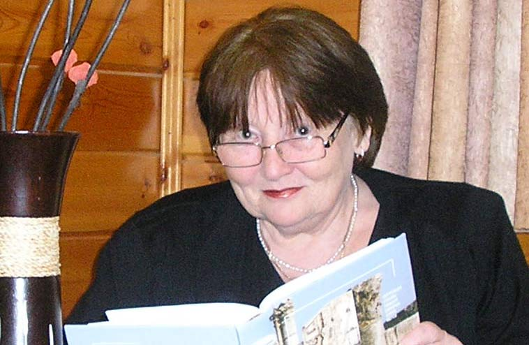

Считается, что к каждой жизни можно подобрать слово-ключ.
К моей жизни можно подобрать целых два таких слова. Первое из них – РОДИТЕЛИ.
Мама: Мария Викторовна Фукс-Найговзина, родилась в Симферополе в 1921-м году.
Папа: Евгений Наумович Найговзин, родился в 1922-м году в Ростове на Дону.
Я появилась на свет в городе Симферополе в 1947-м году и была их единственной дочерью.
До пятидесяти лет я жила под покровом их любви. Любви несомненной, всепрощающей, жертвенной, деятельной, бескорыстной. При таких условиях все остальные обстоятельства были неважны.
Смерть родителей, мамы в 1995-м году и папы в 2002-м году, я до сих пор ощущаю, как трагедию. Как живу без них? Непонятно...
Второе слово - ключ – ИНТЕРЕСНО.
Мне было интересно жить, и я стремилась к тому, чтобы было интересно.
Ну, детство – это ясно.
В 18 лет я поступила в университет, на исторический факультет. Учиться было очень интересно, но некогда.
Окончив университет, полтора десятка лет преподавала в школе. Работать учителем упоительно интересно! Подготовка и проведение урока, общение с учениками – это высокое творчество.
В те годы я написала стихи:
Из сутолоки утренних проблем,
Из горечи семейных неурядиц
Предвижу бесконечность вариаций,
Предчувствую неисчислимость тем.
Заслушиваюсь, словно очищаюсь.
Дозволь испить, живительный родник.
О, как же ты прекрасен, мой двойник,
Которого ученики встречают!
И требуют иного мастерства,
Иное предлагают измеренье:
Не откровенности, а откровенья
И не естествознанья – естества.
Затем двадцать лет служила в Крымском театре кукол. Моя должность называлась завлит. Я вела беседы перед спектаклями, работала с драматургами, с журналистами, сама писала статьи и сценарии, редактировала, вела теле- и радиопередачи, презентовала театр в столицах Союза. Нужно ли говорить о том, как было интересно? Как в театре!
В 1998-м году переехала жить в Израиль. Это было мучительно интересно. В городе Ришон ле-Цион я стала одним из создателей Детской академии наук и искусств.
Кроме этого
- зачищала святилища и открывала курганы, работая в археологических экспедициях.
- исходила Крым. Учителем со старшеклассниками в Звёздных походах видела, как в реке Бурульча прыгает форель.
- плавала теплоходом по Енисею, по Оби. В Игарке, на станции мерзлотоведения, на 30-метровой глубине трогала руками вечную мерзлоту «изнутри». Вдыхала «ароматы» вяленой рыбы в чумах хантов.
- была покорена Израилем:
Страна, покрытая серебряной пыльцой,
Ты для меня вовек непостижима.
Непознаваемы и неисповедимы
Пути Господни над тобой.
- восхитилась великолепием Европы. Увидела подлинники и была потрясена ими.
Первый раз я вышла замуж в 21 год за Толю Куренкова. Вместе мы прожили восемь лет.
Во второй раз моим мужем, другом и любовью на всю жизнь стал Иван Ковальчук, актёр Крымского театра кукол. Иван был наделён абсолютным слухом в прямом и переносном смысле этих слов. Мы были счастливы 34 года. Он умер совсем недавно и это непостижимо.
У меня два замечательных сына: Виктор Куренков и Дмитрий Ковальчук
У меня трое восхитительных внуков: Аня и Андрей Куренковы родились в 1993-м году в Симферополе. Сейчас семья старшего сына живёт в Америке, в Атланте. Андрей учится в Стэнфорде.
Волшебная Маечка Ковальчук появилась на свет в Израиле, в 2015-м году, а Даниэль в 2020.
Процесс облачения мыслей в наиболее точные слова и рифмы доставляет мне удовольствие. Особенно, если случаются мысли не пустяковые и не банальные.
Хорошо бы сказать пусть не самое красивое и не самое громкое, но своё слово.